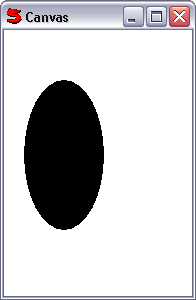

(stockobject, item)
Used to select a stock object (eg. pen or brush) to use to draw another Canvas item. Multiple CanvasStockObjects can be nested.
For example:
c = CanvasControl().Ctrl
c.AddItem(CanvasStockObject(SO.BLACK_BRUSH,
CanvasEllipse(20, 50, 100, 200)))
Will draw:
